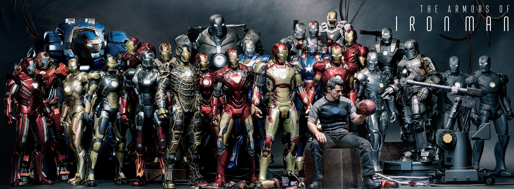
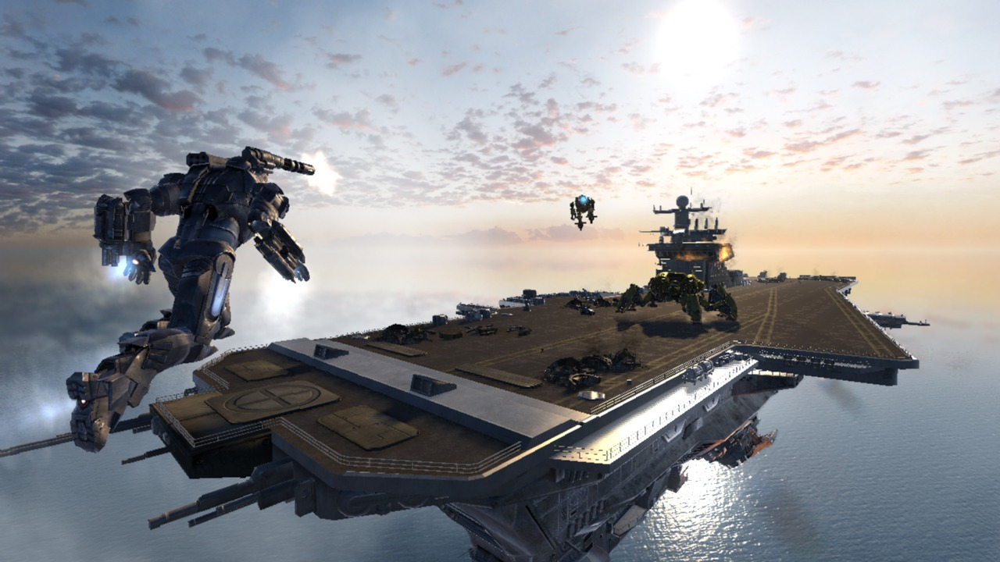
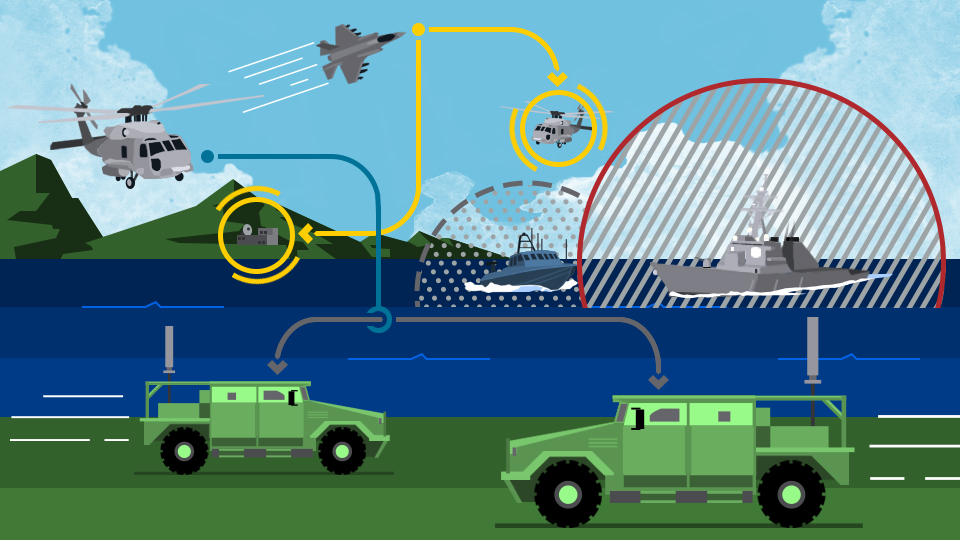

Suit
토니스타크의 특수작전복은 헬멧과 전투복으로 구성된다. 헬멧 속에는 영화 터미네이터에서 보는 것처럼 적군의 위치를 정확히 파악할 수 있는 증강현실 시스템과 다양한 센서, 망원경 등을 탑재하게 된다. 전투복은 총알을 튕겨낼 수 있는 방탄 기능을 기본으로 하고 있다. 체온·심장박동 등을 측정할 수 있는 웨어러블 센서와 무거운 물건을 쉽게 옮길 수 있는 유압 보조장치 등을 포함하고 있다.

Aircraft
토니스타크에서 제작된 다양한 종류의 비행체를 구매해보세요. 비행기 ·글라이더 ·헬리콥터 ·비행선 ·기구(氣球) 등 사람이 탑승하는 모든 비행체를 판매하고있습니다.

Electronic warfare
토니스타크사에서 제작된 전자전입니다. 전자공학의 군사적 이용의 한 부분으로서 적이 전자파(電磁波)를 효과적으로 사용하지 못하도록 방해하고, 아군이 이를 효과적으로 사용할 수 있도록 보장하기 위한 무기를 구입해보세요.